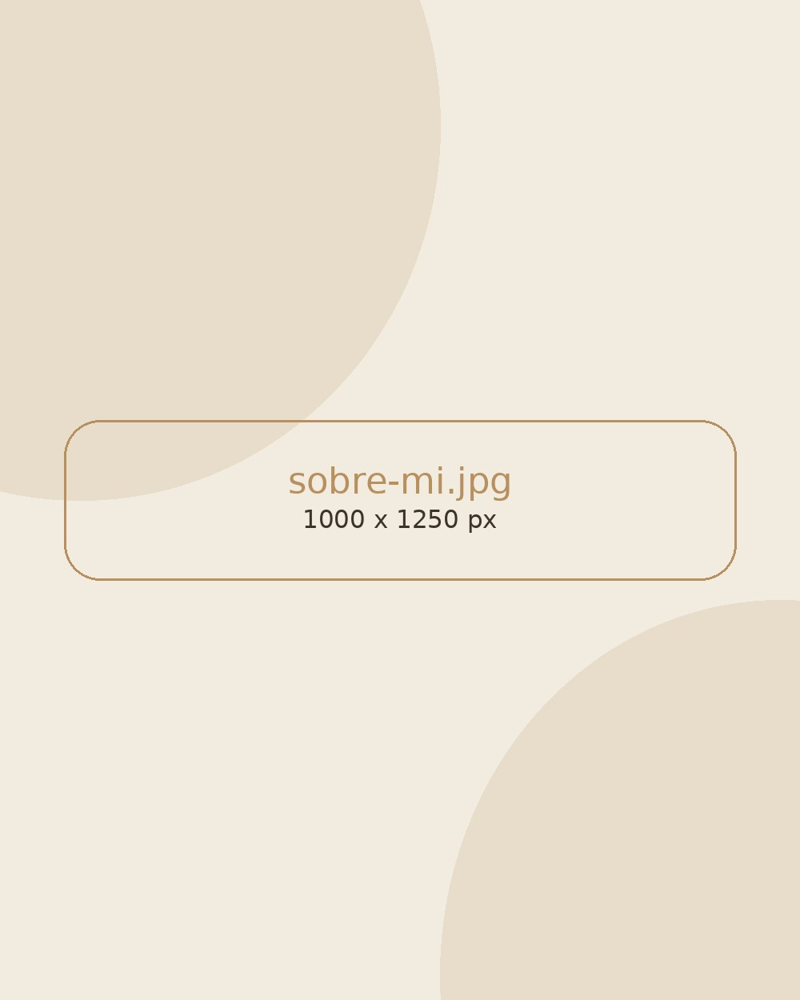
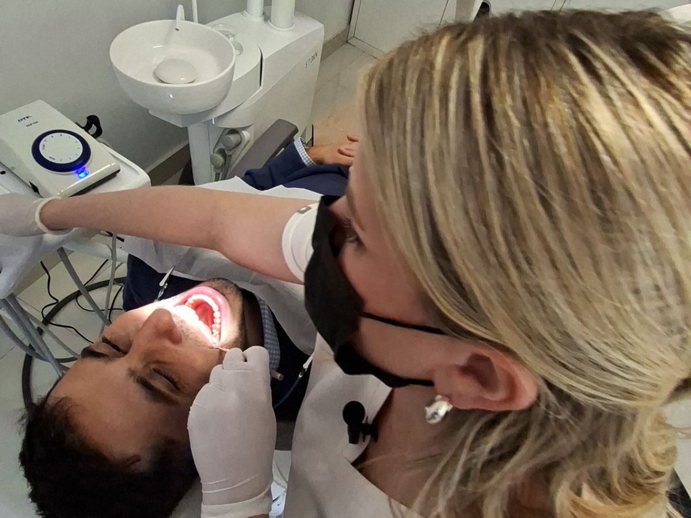

Diez años de consultorio y las mismas preguntas.
Soy Melisa Liberman, odontóloga egresada de la Universidad Nacional de Córdoba. Desde 2015 atiendo pacientes de todas las edades y hago siempre las mismas dos preguntas antes de tocar nada: qué te trae hoy y qué querés lograr.
Mi posgrado en Rehabilitación Oral en la Universidad de Buenos Aires me llevó a especializarme en los casos que necesitan reconstruir la función además de la estética: implantes, prótesis, diseño de sonrisa y recuperación de la mordida.

Integral y preventiva.
Un diente no se arregla solo: se arregla dentro de una boca que mastica, habla y se desgasta de determinada manera. Por eso cada tratamiento parte de un diagnóstico completo y de un plan personalizado.
Ese plan te lo explico con claridad, con sus tiempos y sus costos, para que participes de las decisiones sobre tu salud bucal. No hay presupuestos improvisados ni tratamientos que aparecen a mitad de camino.
Priorizo la calidad de los materiales y la actualización constante, porque un buen trabajo se mide años después, no el día que salís del consultorio.

Dónde estudié
-
2010 – 2015
Odontóloga
Universidad Nacional de Córdoba
-
2018 – 2019
Posgrado en Rehabilitación Oral
Universidad de Buenos Aires
-
Actualidad
Capacitación continua
Actualización permanente en rehabilitación, implantes y estética dental, para trabajar con la mejor evidencia disponible.
Dónde trabajé
-
2024 – actualidad
Lomas Centro Médico · Mendoza
Atención odontológica integral: diagnóstico, rehabilitación oral, estética, implantes y prótesis, con planes de tratamiento personalizados y seguimiento.
-
2021 – 2026
Tandem Salud
Práctica clínica integral con foco en rehabilitación oral y estética dental, en equipo interdisciplinario.
-
2015 – 2020
Clínica Odontológica · Córdoba
Odontología general y restauradora a jornada completa. Diagnóstico y tratamiento integral de pacientes.
En qué me formé
Odontología integral y preventiva
Diagnóstico completo y cuidado a largo plazo.
Rehabilitación oral y prótesis
Reconstrucción funcional de casos complejos.
Implantes dentales
Planificación, colocación y control.
Estética y diseño de sonrisa
Carillas, restauraciones y blanqueamiento.
Cirugía dental
Extracciones y procedimientos quirúrgicos simples.
Atención centrada en el paciente
Explicar, acompañar y respetar tus tiempos.
Conversemos sobre tu caso
La primera consulta es para conocernos y revisar cómo está tu boca. Sin apuro y sin compromiso.